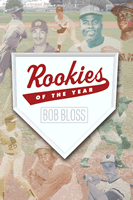
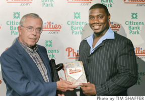

<body bgcolor="#FFFFFF" text="#000000" link="#0000FF" vlink="#CC0000" alink="#CC0000"><center><hr width="350" size="1" align="center" noshade>A compendium of baseball's brightest prospects since 1947<hr width="350" size="1" align="center" noshade><p><a href="https://cdcshoppingcart.uchicago.edu/Cart/ChicagoBook.aspx?ISBN=9781592131648&&PRESS=temple" target="_top">Buy this book!</a> | <a href="https://cdcshoppingcart.uchicago.edu/Cart/Cart.aspx?PRESS=temple" target="_top">View Cart</a> | <a href="https://cdcshoppingcart.uchicago.edu/Cart/Cart.aspx?PRESS=temple" target="_top">Check Out</a></p><p></p></center><!--none//--><h1>Rookies of the Year</h1>
<h3>Bob Bloss</h3>
<P>cloth 1-59213-164-6 $30.50, Apr 05, <FONT COLOR=#990033>Available</FONT>
<BR> 224 pp
6x9
119&nbsp;tables 53&nbsp;halftones
</P><BLOCKQUOTE><I>"A thorough and comprehensive look into a fascinating part of baseball lore. Bloss expertly traces the fates&#151both good and bad&#151of winners of this coveted award which can be bestowed only once in a career, Rookie of the Year."</i>
<br>&#151<b>Ernie Harwell</b>, Hall of Fame baseball broadcaster<i></I></BLOCKQUOTE>
<p>Baseball players only have one opportunity to be named "Rookie of the Year" by the Baseball Writers Association of America. Although some recipients of this prestigious award such as Orlando Cepeda have become league MVPs, or Hall of Fame honorees, others, like Joe Charboneau, failed to live up to their initial promise. <i>Rookies of the Year</i> profiles 116 winners&#151from Jackie Robinson (the first Rookie of the Year in 1947), to Rod Carew, Derek Jeter, and the 2004 honorees. Each player's initial major league season and subsequent career achievements are included.
<p>Featuring interviews with dozens of baseball stars, this is the most comprehensive book ever written on Rookies of the Year. It provides indispensable information on some of baseball's greatest athletes.
<BR>&nbsp;<h2>Excerpt</h2><P>Excerpt available at <a href="http://www.temple.edu/tempress">www.temple.edu/tempress</a></p>
<BR>&nbsp;<h2>Reviews</h2>
<p><i>"As I read Bob Bloss's </i>Rookies of the Year<i>, it brought back fond memories from my own career. Congratulations on a concise, honest, and accurate book. I feel very honored to be included in it."</i>
<br>&#151<b>Mike Hargrove</b>, Manager, Seattle Mariners, and 1974 Rookie of the Year
<p><i>"I enjoyed paging through Bob Bloss's </i>Rookies of the Year<i> and reminiscing about many of baseball's most promising players. I had the privilege of playing with some of them and then seeing others in my announcing years. Bob writes with great detail, and includes bits of trivia, that make for interesting and entertaining reading."</i>
<br>&#151<b>Herb Score</b>, 1955 Rookie of the Year and Cleveland Indians broadcaster for 34 years
<p><i>"I have had the honor to call games in which most of the Rookies of the Year in Bob Bloss' great new book played. Bob not only chronicles the player's first year in 'The Show,' but also their careers after, and what they are up to now. It's a great read. I know you will enjoy it."</i>
<br>&#151<b>Harry Kalas</b>, Philadelphia Phillies broadcaster, Hall of Fame 2002
<p><i>"The book offers interesting stats and stories for both the hardcore baseball enthusiast and the casual fan."</i>
<br>&#151<b><i>Northeast News Gleaner</i></b> (Torresdale Edition)
<BR>&nbsp;<P><p><a href="../roy_profiles.html" target="_top">2005 Rookie of the Year profiles</a>: Houston Street (American League) and Ryan Howard (National League).
<p><br> <span class="small">Bob Bloss hands his book <em>Rookies of the Year</em> to<br>Philadelphia Phillies' Rookie of the Year 2005<br>Ryan Howard. </span></p></P><BR>&nbsp;<br>
<h2>Contents</h2><P>
<p>Acknowledgments
<br>Introduction: One and Done
<br>1. The Jackie Robinson Award: A Jewel in the Legacy of Baseball's First Rookie of the Year
<br><i>Chronological Listing of Rookies of the Year (1947-2004)</i>
<br>2. First Steps toward Cooperstown: Rookies of the Year in the Hall of Fame
<br>3. A Double Helping of Hardware: Rookies of the Year Who Became Most Valuable Players
<br>4. Dugout Directors: Rookies of the Year Who Became Managers
<br><i>Rookies of the Year by Franchise (1947-2004)</i>
<br>5. The Short Timers: Rookies of the Year with Short Careers
<br>6. Available Only Once: Other Rookies of the Year
<br>7. Ready for 21st-Century Action: Rookies of the Year Still Active in the Major Leagues
<br><i>List of </i>The Sporting News<i> Rookies of the Year (1946-2004)</i>
<br>Summary: Saluting So Few
<br>Index
</P><BR>&nbsp;<H2>About the Author(s)</H2>
<table><tr><td valign="top"><img src="/tempress/authors/1716_au.gif" height="90" width="75"></td><td width="100%" valign="middle"><p><b>Bob Bloss</b> native of Erie, Pennsylvania, is a freelance journalist and historian specializing in baseball coverage. He is the author of <I><A HREF="1292_reg.html" TARGET="_top">Baseball Managers: Stats, Stories, and Strategies</A></I> (Temple).</P></td></tr></table>
<BR><H2>Subject Categories</H2>
<p><A HREF="/tempress/sports.html" TARGET="_top">Sports</a>
<BR><A HREF="/tempress/general.html" TARGET="_top">General Interest</a>
<BR><A HREF="/tempress/history.html" TARGET="_top">History</a>
</p>
<p align="center"><a href="https://cdcshoppingcart.uchicago.edu/Cart/ChicagoBook.aspx?ISBN=9781592131648&&PRESS=temple" target="_top">Buy this book!</a> | <a href="https://cdcshoppingcart.uchicago.edu/Cart/Cart.aspx?PRESS=temple" target="_top">View Cart</a> | <a href="https://cdcshoppingcart.uchicago.edu/Cart/Cart.aspx?PRESS=temple" target="_top">Check Out</a></p><p><font face="Arial" size="1"><a href="copyright.html" onMouseOver="window.status='Web Copyright Policy';return true;" onMouseOut="window.status=''" title="Web Copyright Policy">&copy;</a> 2015 <a href="http://www.temple.edu" target="new" onMouseOver="window.status='Link to Temple University home page';return true;" onMouseOut="window.status=''" title="Link to Temple University home page">Temple University</a>. All Rights Reserved. http://www.temple.edu/tempress/titles/1716_reg.html</font></p>